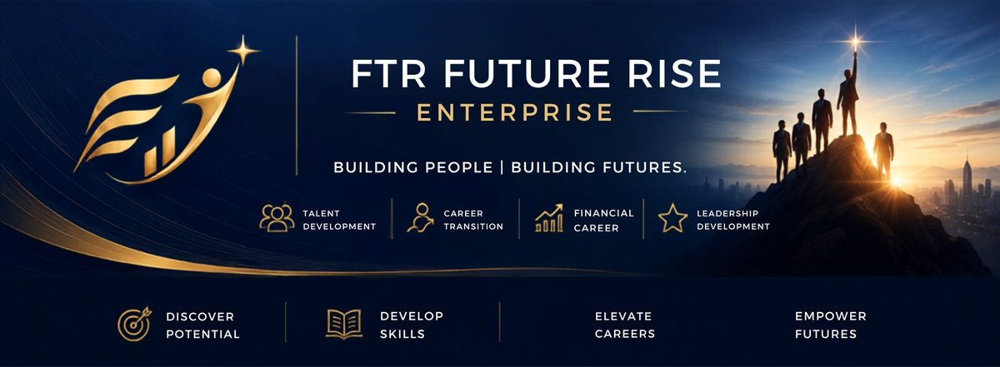

FTR Future Rise Enterprise — Building People. Building Futures.
Penang · Kuala Lumpur · Talent ProgrammeDiscover your potential. Develop your capabilities. Build a future that grows with you.
A small team, built on relationships.
FTR Future Rise Enterprise was founded to do one thing well: connect people who are figuring out their next step with real experience, real mentors, and honest conversations about who they could become.
No hard sell, no scripts — just a place to start, run by people who've spent over a decade helping others grow their careers and their confidence.
Who FTR Future Rise Enterprise Is For
Wherever you're starting from, there's a reasonable next step here — no single path is assumed.
For students who want to understand themselves, explore careers and gain real-world exposure before graduation.
For those looking for a career with learning, development and long-term possibilities.
For professionals who feel ready for a new direction.
For people who want to develop additional skills, income capabilities or a more flexible career model.
For women who want to understand financial planning, build confidence and create greater independence.
For people who want to eventually develop others and build a team.
Discover where your strengths could take you.
We believe the right career starts with understanding yourself. Our Career Finding Guide helps you gain a clearer understanding of your strengths, preferences and potential career direction — before making your next move.
Discover Your Career Direction
A short self-assessment to help you explore possible career directions and discover areas that may suit you. Use your result as a starting point for a conversation — not a final answer.
Take the Career Finding Guide assessment.
Complete the assessment and get your result.
WhatsApp us your name + completed assessment result.
Receive one complimentary career consultation with our team.
This is a self-discovery tool, not a career placement guarantee — the real value comes from the conversation afterward.
Completed your assessment?
Send us your Name + Assessment Result via WhatsApp. We'll arrange one complimentary career consultation with you.
We're not only interested in what you can do today.
During the internship and interview process, we want to understand who you want to become — not just what's on your resume.
Four stops, at your own pace.
Explore
Join as an intern. Sit in on real conversations, workshops, and the small daily work that makes a business run.
Learn
Work alongside mentors with 10+ years of experience. Ask the questions a lecture hall can't answer.
Grow
Take on real ownership — a project, an event, a piece of content that's genuinely yours by the end.
Lead
If it clicks, we'll talk about what a longer path could look like. If it doesn't, you leave with real experience either way.
More Than an Internship. A Chance to Explore Your Future.
This isn't an ordinary administrative internship. It's a structured opportunity to explore career possibilities, understand your strengths, and develop skills that go well beyond a classroom.
Who we're looking for
- Curious and willing to learn
- Responsible and proactive
- Comfortable communicating with people — or want to get better at it
- Open to new experiences
- Willing to receive feedback
- Interested in personal and professional development
- Able to work independently and with a team
- Interested in understanding different career possibilities
What You Can Gain
Learn to Plan Your Money. Learn to Plan Your Future.
Financial planning isn't about products — it's about understanding the building blocks that shape a secure future.
From Building Wealth to Leaving a Legacy
Wealth Creation
Build your ability to generate income and create financial resources.
Wealth Protection
Protect yourself, your family and what you've built from major financial risks.
Wealth Accumulation
Grow and manage your resources toward your financial goals.
Wealth Distribution
Plan how your wealth can eventually be transferred according to your intentions.
This is an educational framework to help you think about financial planning — not a fixed sequence everyone must follow, and not a specific product recommendation.
Her Money. Her Future. Her Choice.
Every woman should have the confidence to understand her own money, make informed decisions and participate actively in planning her own future.
Learn the basics of managing money and building healthy financial habits.
Understand income, protection, savings and long-term planning.
Understand how financial responsibilities and protection needs may change.
Learn how to plan for family priorities while maintaining personal financial awareness.
Understand how financial planning can support periods of change.
Learn to make informed financial decisions independently.
Learn for yourself. Plan for yourself. And when you're ready, help others plan too.
Learn for Yourself
Financial education and personal financial awareness. No obligation to join anything — you can take part in the learning journey on its own.
Build a Career
Professional development and the opportunity to help others through financial planning — for those who choose it, and only when they're ready.
Financial concepts, learned by doing
Experience the Game →
Join an Experience →
These are educational experiences, not a promise of financial results. Session details will be shared when scheduled.
Grow. Connect. Experience.
FTR Future Rise Enterprise is also about experiences and relationships — not just career development on paper.
Team members may have opportunities to participate in company recognition events, celebrations and overseas experiences, subject to eligibility and company arrangements.
Watch & Explore
A closer look at career exploration, financial literacy and life at FTR Future Rise Enterprise.
Career Exploration
Financial Literacy
Women & Financial Independence
Leadership & Personal Development
Team Experiences & Culture
Build a Career in Financial Services
A financial services career can help you develop skills that go far beyond selling.
For those who discover that they want to help others plan and build a professional career in financial services, FTR Future Rise Enterprise provides a pathway to explore this direction.
Three Ways to Engage With Us
You don't have to decide today. Start wherever feels right.
Straight answers
Is FTR Future Rise Enterprise a recruitment company?
Not in the traditional sense. We focus on talent discovery, career development and professional opportunities — including, for some, a pathway into financial services.
Do I need financial experience?
No — this depends on the specific opportunity. Most people who join us start with curiosity, not experience.
Is this only for people who want to become insurance agents?
No. The platform begins with career discovery, personal development and financial education. Financial services is one possible pathway among several.
Is the internship paid?
Internship allowances start from RM500 to RM1,000 and above, depending on the role and duration.
Do you accept interns?
Yes, subject to availability and our selection process.
Is the Career Finding Guide free?
The assessment is accessed using the link and access code provided on this website. If that changes, we'll update this page.
What happens after I complete the assessment?
Send your name and result to us via WhatsApp, and we'll arrange one complimentary consultation to talk through what it might mean for you.
Who can participate in financial learning?
Our financial education content is designed for women and individuals at different life stages who want to build financial awareness — participation doesn't require any career commitment.
Do I have to join the company after attending?
No. Learning and exploration are intentionally separate from any career opportunity. You're welcome to take part in workshops, the assessment, or events without any expectation of joining.
Not sure what direction is right for you?
Start with understanding yourself.
Complete the assessment.·Share your result with us.·Get one complimentary career consultation.
Take the Career Finding Guide →Curious? Start with a conversation.
No commitment, no pressure — just a chance to see if this is worth your time.